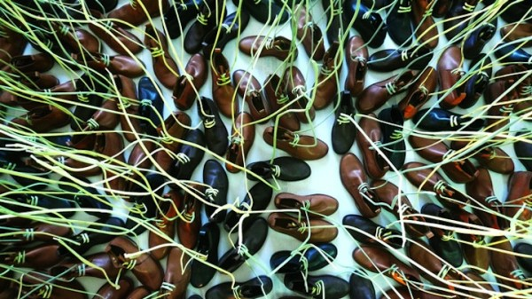
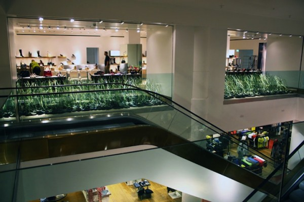
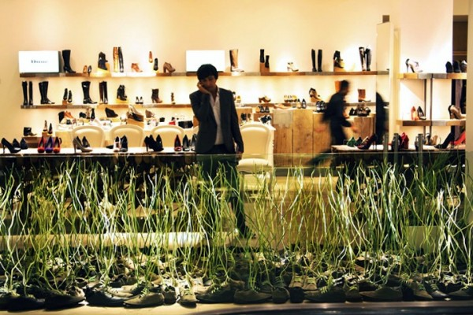
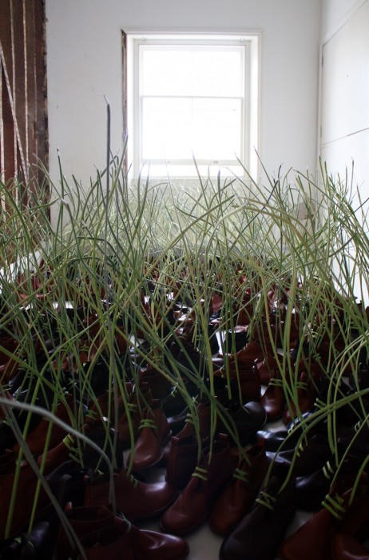

Доминик Уилкокс — художник, который любит бросать вызов окружающим. Там где другие видят скучные предметы быта и интерьера Доминик умеет разглядеть искусство. По мнению Доминика, чем скучнее отправной материал тем интереснее с ним работать.

Один из его последних проектов, называется Поле. Это инсталляция из 700 ботинок, шнурки которых очень напоминают побеги молодой травы. «Над этой работой мы работали довольно долго» — рассказывает Доминик. «700 шнуровок довольно непро стая задача и мне было бы очень непросто обойтись без помощников.»
По наблюдениям посетителям престижного универмага Selfridges в Лондоне очень понравилась работа Доминика.



Как же художник заставил шнурки тянуться к свету как настоящая трава? Ответ простой: на инсталляцию было потрачено более 1,3 километра медной проволоки.